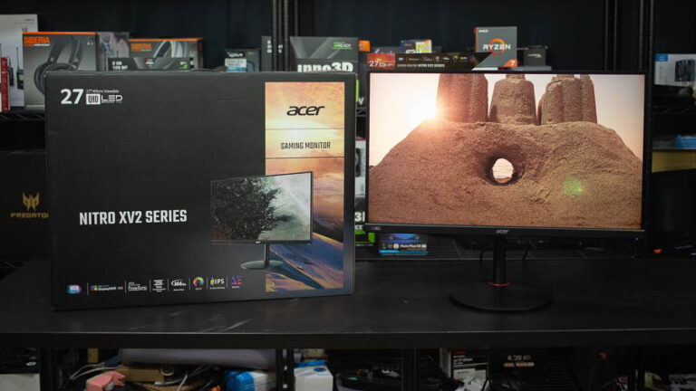
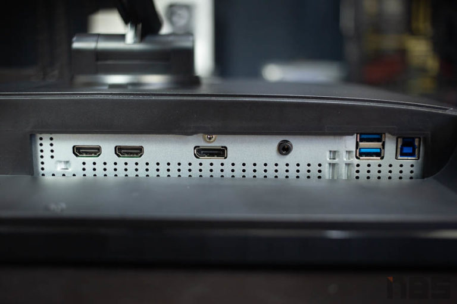
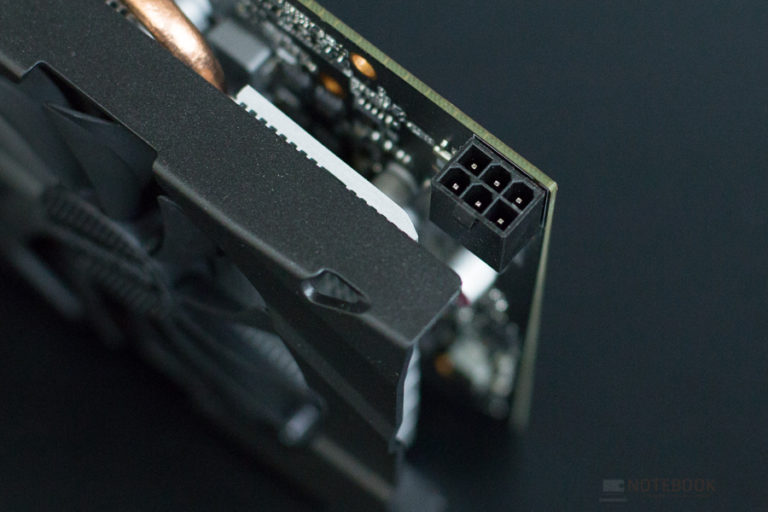
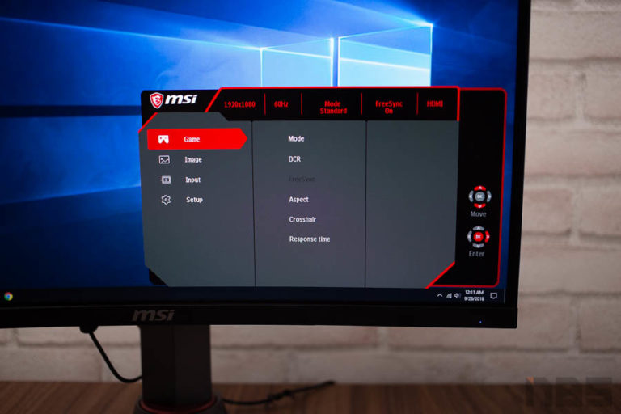
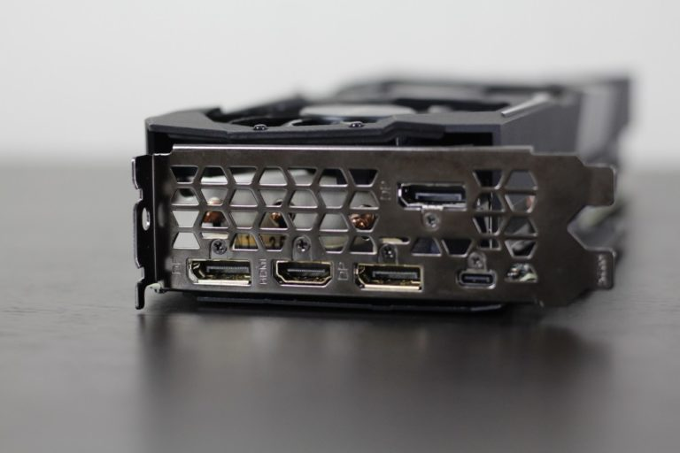
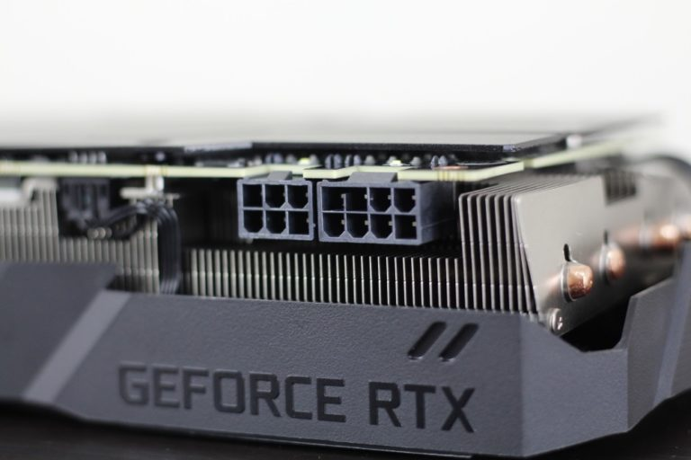

จอฟ้า จะกระพริบ ภาพแตก หลายคนอาจเคยเจอกันมาบ้าง แต่กรณีที่เปิดเครื่องมาแล้วจอมืด ไม่แสดงผล ภาพไม่ขึ้น ไม่มีสัญญาณเข้า แบบนี้น่ากลัว เพราะหลายครั้งมันหมายถึงความเสียหาย ไม่ว่าจะเป็นจอเสีย การ์ดจอพังหรือเมนบอร์ด แรม ลาโลก แต่ก็อาจไม่ใช่เสมอไป อย่างน้อยๆ เรามาลองใช้วิธีตรวจเช็คและแก้ไขอาการจอมืด ไม่แสดงภาพด้วยวิธีต่างๆ เหล่านี้กันก่อน

1.เช็คว่าต่อสายถูกหรือไม่?
อาการ ภาพไม่ขึ้น บางครั้งยกเครื่องมาใหม่ๆ ก็เผลอกันได้ เพราะบางรุ่นเมนบอร์ดก็มีพอร์ตแสดงผล การ์ดจอก็มี แต่ดันไปต่อพอร์ต DVI หรือ HDMI ที่พอร์ตด้านหลังเมนบอร์ด ซึ่งหากไม่ได้ตั้ง Output แบบ Auto เอาไว้ ภาพก็จะไม่ขึ้นจออยู่ดี วิธีแก้ก็แค่สลับสายไปต่อพอร์ตที่การ์ดจอ เท่านี้ก็ใช้งานได้แล้ว

2.เช็คที่พอร์ตและสายสัญญาณของจอด้วย
ปัญหานี้ในบางครั้งก็ต้องสลับเช็คพอร์ตแสดงผลแต่ละพอร์ตด้วย เช่น การ์ดบางรุ่นมี HDMI หรือ DisplayPort หลายช่อง ให้ลองสลับไปแต่ละช่อง ว่าสามารถใช้งานได้หรือไม่ หรือถ้าสลับพอร์ตแล้วยังไม่เป็นผล ให้ลองเปลี่ยนใช้สายสัญญาณเส้นอื่นๆ ไปด้วย เพราะอาจเป็นที่สายต่อก็เป็นได้

3.การ์ดจอไม่ได้ต่อไฟเลี้ยงหรือเปล่า?
แต่ในบางกรณีอาการ ภาพไม่ขึ้น ก็อาจจะเกิดจากความพลั้งเผลอของผู้ใช้ เช่นเปลี่ยนการ์ดใหม่หรือขยับการ์ด แล้วลืมต่อไฟเลี้ยงจากเพาเวอร์ซัพพลายหรือต่อสายไม่ครบ บางรุ่นใช้ 6-pin หรือ 8-pin บางรุ่นใช้ทั้ง 6+8 pin ต้องต่อสายให้ครบก่อน การ์ดจอจึงจะทำงาน แต่ส่วนใหญ่ระบบจะแจ้งว่า ให้ต่อสาย Power connector บนตัวการ์ด

4.เปลี่ยน Source หรือ Input ของมอนิเตอร์หรือยัง?
หลายคนมองข้ามสิ่งเล็กๆ น้อยๆ นี้ไป โดยยังไม่ได้สลับช่องสัญญาณของมอนิเตอร์ให้ตรงกับสัญญาณ Input จากการ์ดจอเช่น DVI, HDMI หรือ DisplayPort เนื่องจากมอนิเตอร์บางรุ่น จะไม่ได้ตั้งรับสัญญาณแบบอัตโนมัติให้ แม้จะเปิดเครื่องและมอนิเตอร์แล้ว ภาพก็ยังไม่ขึ้นสักที

5.สล็อต PCI-Express อาจมีปัญหา
ความเสียหายของสล็อต PCI-Express บนเมนบอร์ด ก็อาจทำให้จอภาพไม่แสดงผล เพราะการ์ดจอไฟเข้า แต่ไม่ทำงาน หากเมนบอร์ดมีสล็อต PCI-Express X16 มากกว่า 1 ช่อง ก็ใช้วิธีสลับสล็อตดูก่อน ซึ่งหากใช้ได้ก็หมายความว่าสล็อตเดิมเสีย แต่ถ้ายังใช้งานไม่ได้ อาจเป็นไปได้ว่าการ์ดจอเสีย แต่ถ้าสล็อตอื่นใช้ได้และยังมีประกัน ก็สามารถส่งเคลมได้

6.เกิดจากการ์ดจอเสีย
เป็นปัญหาสุดคลาสสิคและเจอกันบ่อย ซึ่งโดยปกติ ก็จะเกิดได้จากหลายสาเหตุ อาการก็มีตั้งแต่ภาพแตกลาย เปิดวินโดวส์ได้ แต่เข้าเกมแล้วดับ ไปจนถึงไม่แสดงภาพขึ้นจอ ถือว่าเสียโดยถาวร หากยังมีประกันก็ส่งเคลมได้เลย
ในบางครั้งการ์ดจอที่ใช้มานานอาจเกิดคราบ Oxide หรือคราบสกปรกขึ้นบนแถบพินที่เป็นทองแดง เมื่อติดตั้งลงบนสล็อตหน้าสัมผัสถูกคราบเหล่านั้นคลุมอยู่ ก็ไม่สามารถเชื่อมต่อสัญญาณได้ตามปกติ จึงไม่สามารถแสดงผลได้ วิธีแก้คือ การทำความสะอาด โดยใช้สเปรย์ขจัดคราบประเภท Contact cleaner หรือลองใช้ยางลบดินสอถูเบาๆ ที่บริเวณหน้าสัมผัส เช็ดให้สะอาดและลองติดตั้งใช้งานดูอีกครั้ง
|